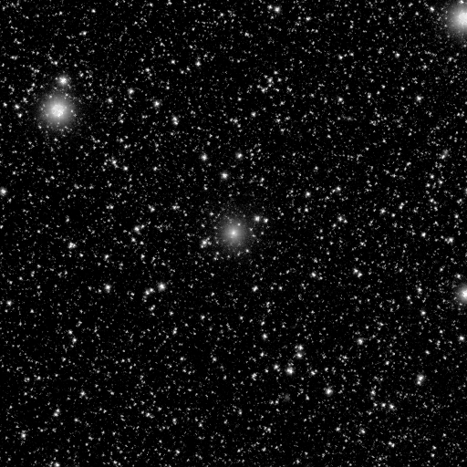
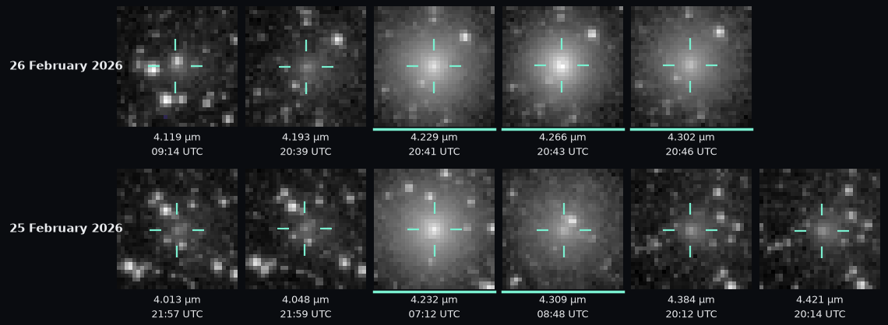
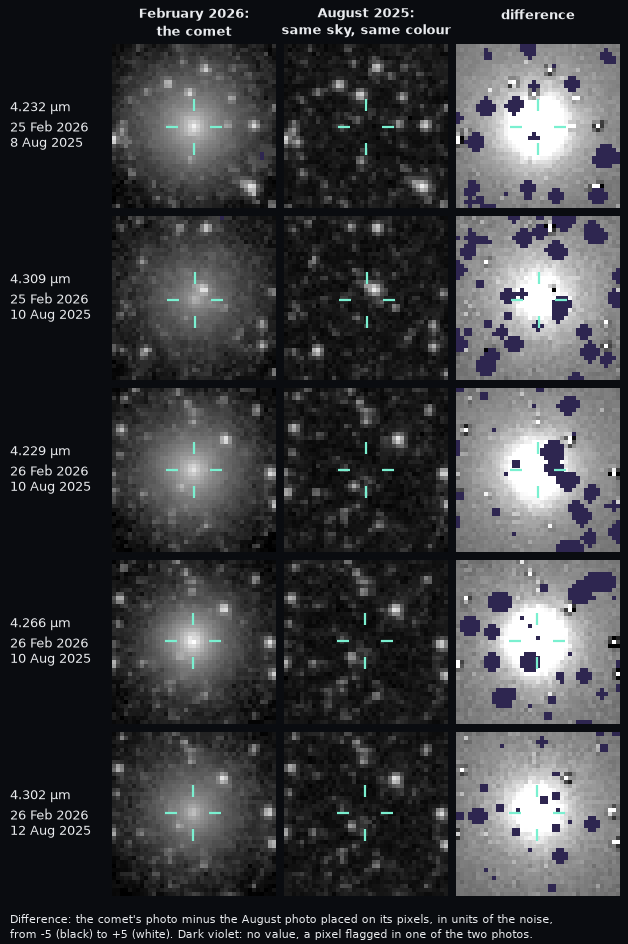

COMET LEMMON. BRIGHT AT THE COLOUR OF CARBON DIOXIDE.
On two nights of comet Lemmon (C/2025 A6) crossed the view of SPHEREx, and the telescope took 16 photos of it, each at another infrared colour. On the comet at the colour of carbon dioxide is about 16 times brighter than at the colours on either side of it; on about 10 times, from one photo.
In plain words: in some photos the comet is a bright glow and in others a faint smudge, and what sets them apart is the infrared colour each photo was taken at. The bright ones are at the colour of carbon dioxide.
- Object
- Comet C/2025 A6 (Lemmon)
- Nights
- and
- Band of carbon dioxide
- 4.20–4.32 µm
- Check
- K2
A colour here is a wavelength of infrared light, in micrometres (µm). Brightness is in millijanskys (mJy), a unit astronomers use for faint light.

- Taken
- Colour
- 4.266 µm, inside the band of carbon dioxide
- Field
- 13.1 arcminutes across, north up
- Wide picture
- 52.5 arcminutes wide, cut from the photo
- Each square
- One pixel of the camera
- Photo
- SPHEREx Level 2, NASA/IPAC Infrared Science Archive
TWO NIGHTS, TWO PLACES, BOTH WHERE IT WAS PREDICTED
SPHEREx caught the comet inside the band of carbon dioxide on both nights, at two places on its path 52.2 arcminutes and 37.5 hours apart. An arcminute is a sixtieth of a degree. Both times the comet was where JPL Horizons predicts it for a telescope at SPHEREx’s place in space. In , at the same colour, there is nothing at either place. K3
- Line
- The path JPL Horizons predicts, as seen from SPHEREx
- Dots
- One for each photo; the bright ones are inside the band
- Rings
- The two places shown here
-
- August photo
- February photo
- Colour, the closest match
- February 4.232 µm, August 4.230 µm
- Brightness, February
- 162.5 mJy
- Brightness, August
- −0.1 mJy
- Place
- 0.4 of a pixel from where JPL Horizons predicts
-
- August photo
- February photo
- Colour, the closest match
- February 4.266 µm, August 4.273 µm
- Brightness, February
- 263.2 mJy
- Brightness, August
- +0.5 mJy
- Place
- 0.2 of a pixel from where JPL Horizons predicts
BOTH NIGHTS, COLOUR BY COLOUR
Every photo here shows the comet on one grey scale. What differs from one photo to the next is the colour it was taken at. Inside the band of carbon dioxide, from 4.20–4.32 micrometres, the comet is a wide glow. Just outside the band it is a small smudge.

In one photo of , at colour 4.119, the bright dot beside the mark is a star that the Gaia catalogue lists, 9 arcsec from the comet. It is not part of the comet, and it adds to the brightness measured there.
How these photos are shown
Black sits just below the empty sky, at twice its noise. White is the comet’s brightest point. Faint light is stretched so that it shows. Each small square is one pixel of the telescope’s camera, enlarged and never smoothed, with north up. A pixel that the archive flags as faulty is filled in from its neighbours.
WHY WE READ IT AS CARBON DIOXIDE
Three things together fit carbon dioxide; none alone proves it: on both nights the comet is bright at one colour and faint at the colours beside it; the same sky at the same colour is empty when the comet is not there; and each time the comet is where it was predicted. One caution stands beside them: on one of the two nights the figure rests on a single photo.
Bright at one colour, faint beside it
- the same sky at the same colour in August: no comet
- the two neighbours, the nearest photos on either side of the band
- a star of the catalogue lies in the circle and adds to the brightness
- Across
- Colour: a wavelength, in micrometres (µm)
- Up
- Brightness in millijanskys (mJy), a lower limit
- Shaded
- The band of carbon dioxide, 4.20–4.32 µm
At the colour of carbon dioxide the comet is about 16 times brighter than at the colours on either side of the band on , and about 10 times on . K2
Brightness is measured inside a circle of 2 pixels (12.3 arcsec) in radius around the predicted place, after taking off the sky seen in a ring from 40–55 pixels out. Every brightness is a lower limit: the glow is wider than the circle and still reaches the ring, so a little of the comet is taken off with the sky.
| Night | Brightest photo inside the band | Nearest photo below the band | Nearest photo above the band | Brighter by |
|---|---|---|---|---|
| colour 4.266, brightness 263.2 | colour 4.193, brightness 14.1 | colour 4.384, brightness 19.5; photographed on the other night, | 15.6×, give or take 1.4 | |
| colour 4.232, brightness 162.5 | colour 4.193, brightness 14.1; photographed on the other night, | colour 4.384, brightness 19.5 | 9.7×, give or take 0.9 |
How firm is that number?
With the sky taken from a nearer ring, 15–25 pixels out, the contrast of is 16.7. In a wider circle it is 10.9. With the circle set a little off the predicted place, in any direction, it stays between 12.7 and 17.3.
Every photo, with its colour and its brightness
| Taken | Colour, in micrometres | Brightness, in millijanskys | Notes |
|---|---|---|---|
| 3.819 | 12.4 | a star of the catalogue lies in the circle and adds to this | |
| 3.852 | 16.5 | a star of the catalogue lies in the circle and adds to this | |
| 3.886 | 15.9 | a star of the catalogue lies in the circle and adds to this | |
| 3.978 | 10.0 | ||
| 4.013 | 10.3 | ||
| 4.048 | 11.6 | ||
| 4.119 | 29.1 | a star of the catalogue lies in the circle and adds to this | |
| 4.193 | 14.1 | the neighbour below the band | |
| 4.229 | 136.2 | inside the band | |
| 4.232 | 162.5 | inside the band; the brightest of its night | |
| 4.266 | 263.2 | inside the band; the brightest of its night | |
| 4.302 | 71.7 | inside the band | |
| 4.309 | 52.7 | inside the band | |
| 4.384 | 19.5 | the neighbour above the band | |
| 4.421 | 17.5 |
The same sky without the comet
If the glow belonged to that patch of sky and not to the comet, it would be there in too. For each photo of the comet inside the band, the match rule of this site picked a photo of the same place taken in August at the same colour. None of them shows anything at the mark beyond the noise: the largest August brightness is 2.9 % of the comet’s. K3

- Left
- The comet in February
- Middle
- The same patch of sky at the same colour in August
- Right
- February minus August, in units of the noise: black is darker than in August, white brighter
| Colour, in micrometres | Comet photo | Brightness, in millijanskys | August photo | Brightness there | Their colours differ by, in nanometres |
|---|---|---|---|---|---|
| 4.232 | 162.5 | −0.1 | 1.4 | ||
| 4.309 | 52.7 | +1.5 | 12.4 | ||
| 4.229 | 136.2 | +0.3 | 8.0 | ||
| 4.266 | 263.2 | +0.5 | 7.7 | ||
| 4.302 | 71.7 | +0.7 | 7.2 |
Does it rest on one photo?
Leave out any one photo other than a night’s brightest, and the contrast stays at 6.7 or more. Leave out the brightest photo of , and the next brightest gives 8.1. Leave out the brightest photo of , and the one photo that remains inside the band sits at the band’s edge and gives 3.1: on that night the figure rests on one photo.
| Photo left out | Contrast on | Contrast on |
|---|---|---|
| Colour 4.193, : one of the two neighbours | 6.7 | 10.8 |
| Colour 4.232, : the brightest photo of its night | 3.1 | 15.6 |
| Colour 4.266, : the brightest photo of its night | 9.7 | 8.1 |
| Colour 4.384, : one of the two neighbours | 10.3 | 16.6 |
| Any one of the other 11 photos | 9.7 | 15.6 |
What we do not claim
- How much carbon dioxide the comet gives off.
- The comet’s true brightness. Ours are lower limits inside a small circle, and they are not tied to other telescopes.
- Anything about other gases, such as water or carbon monoxide.
- That this has not been measured before.
One earlier figure of ours was wrong and has been corrected. K3-corrected
What others have published
Our search of what others have published, by hand: nothing on the comet’s carbon dioxide found on ; DPS not searched. That is not proof that nobody has measured it. The entry of the check lists the sources searched and still waits for a person to sign it. K14